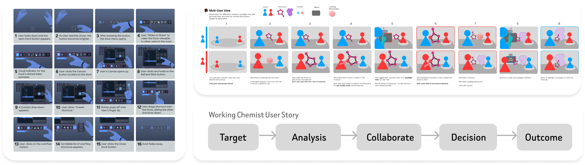
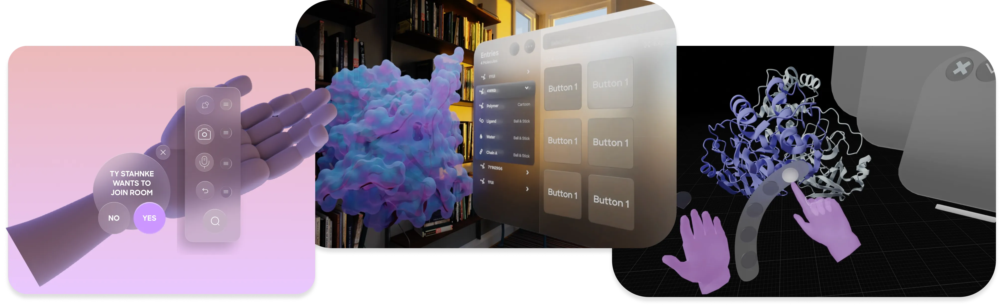
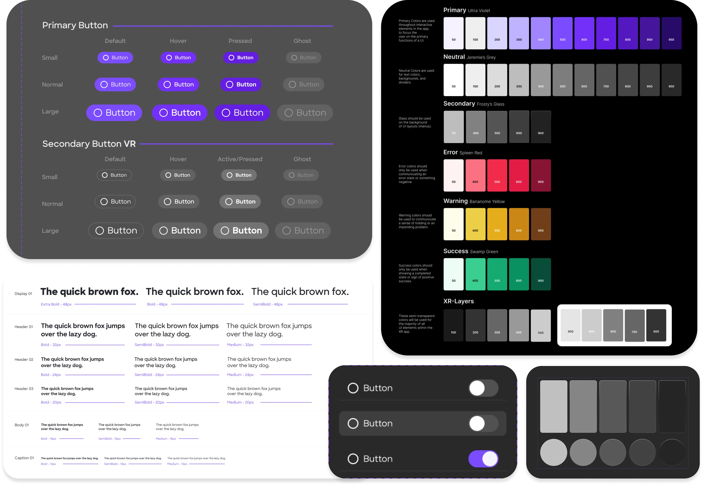
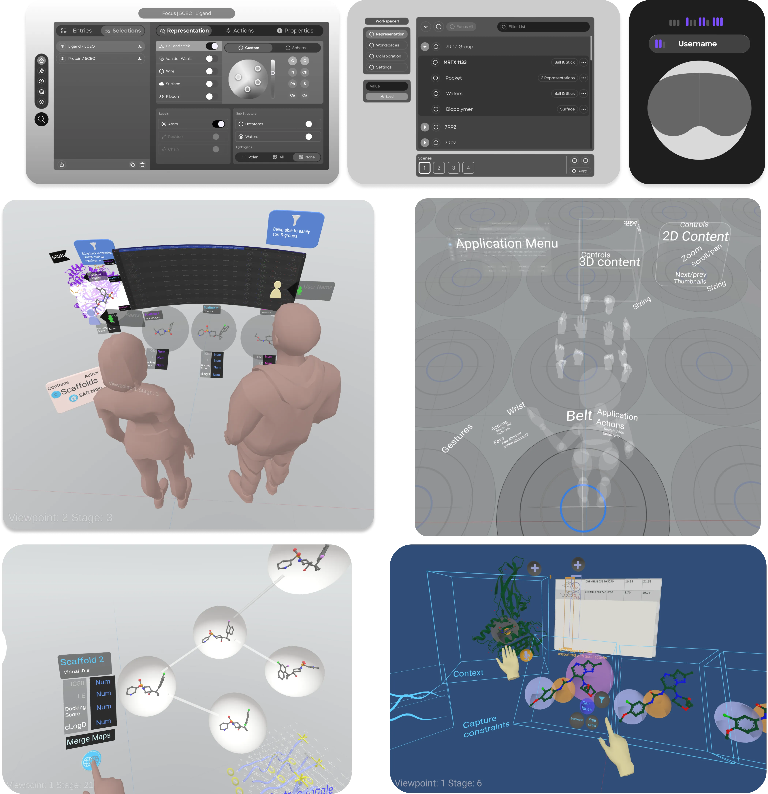
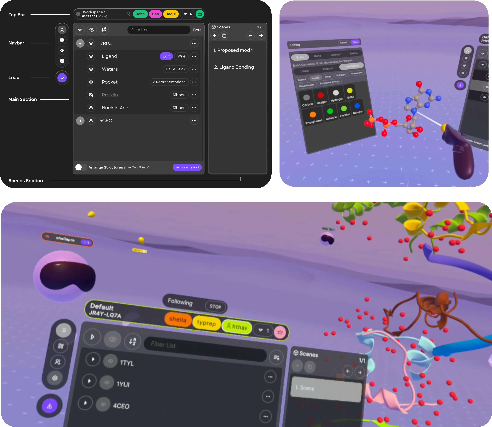

Overview
Challenge
Nanome is a powerful VR software for molecular visualization. However users were hindered by clutter and navigation confusion. It lacked a consistent design, comfortable environment, and intuitive UI. A redesign was needed to focus on the core needs of end users.
Goal
Completely rebuild the software from the ground up, with a cohesive interface and style that will be intuitive to the user, enabling their productivity.
Role and Responsibilities
One of two Product Designers. We did everything. Our work consisted of creating concept art, building a style guide including a component library in Figma, wire-framing, user testing, and handing off high fidelity designs to developers.
Design Process
Discovery
Understanding Users' true needs. This involved evaluating our user journeys, researching other collaborative applications. Creating flowcharts and storyboards to explore existing workflows and possible solutions.
Concept Art
Ease of use meets pleasing to the eye. We had plenty of complaints about the complexity of the previous app's UI, so we went for something minimalistic and trendy. This is software for work so it needs to stay minimal yet clear and be comfortable for hours of use.
Building A Library
Building blocks. In order to quickly build designs and iterate on them, we needed a cohesive system for all buttons, icons, text, and colors.
Prototyping
Blocking out quick interfaces and ideas in Figma, and testing them in XR prototyping software ShapesXR to better understand the direction. We continuously iterated based off feedback from internal scientists.
Design
Simplicity that can scale. For Nanome 2, we created a minimalistic avatar and environment to keep focus on molecular structures. We developed key interfaces like wrist UI, project navigation, ligand editor, file manager, and countless more, all streamlined into four main tabs accessible from the wrist.
User Testing
We tested through multiple rounds of real pharmaceutical customer user groups, both existing Nanome 1 Users and new users. First rounds of testing users appreciated the UI's aesthetic and simplicity but found movement in VR still challenging.
Iteration
There is no spoon. To address this, we removed teleportation navigation and introduced a spotlight and follow paradigm. The idea was known as 'Non-Rivalrous' structures that can be manipulated freely or shown to others with shared cursors that keep everyone on the same page in any view. Applying this increasingly used paradigm from 2D tools into XR was a challenge but the end result was worth it. User testing validated our hypothesis and a new paradigm for Nanome was born.

Interactive 3D Demo
Experience the molecular scaffold viewer—a preview of the Nanome 2 interface. Use the controls to spotlight, follow, or breakout.
Conclusion
They loved it. We improved Stability & Ease of Use, Minimized 'Time to Structure' and even Simplified Collaboration without hampering individual usage with the innovative Spotlight/Follow feature.
What Nanome Offers Today
The redesign laid the foundation for what Nanome has become: a platform for elevating drug discovery ideation & collaboration. Key capabilities include:
- Conversational Design — Set up your workspace and change representations with Natural Language
- New Collaboration & Visualization — Instantly see and interact with molecular surfaces, ligands, and more
- Re-imagined Design Sessions — Quickly brainstorm compound ideas with medicinal chemistry colleagues
- Spatial Computing — Built for Mixed Reality and Augmented Reality devices